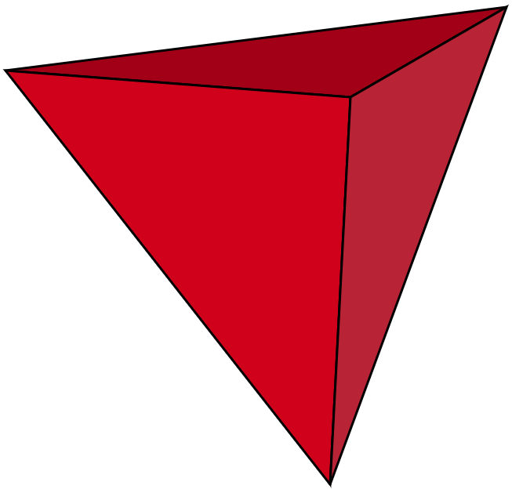
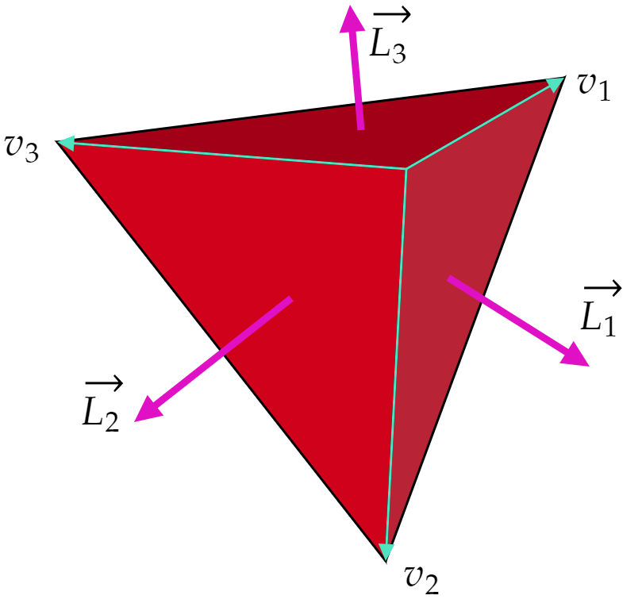
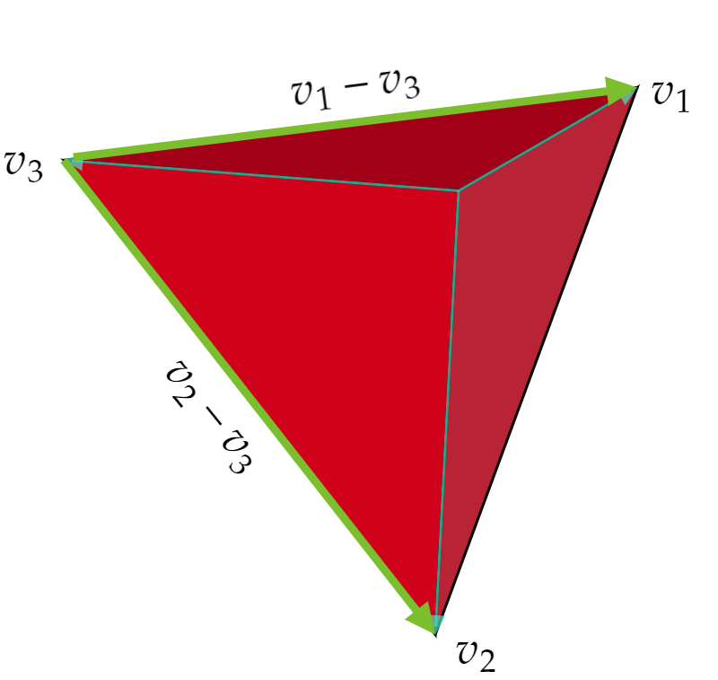

January 21st, 2024.
One of my goals during winter break was to formally study some flashy/pop-science theories. One such theory is Loop Quantum Gravity, approached as a method for understanding Quantum Gravity.
In this entry, I aim to explore the introductory ideas behind a basic geometrical body: the tetrahedron. Additionally, I will make the effects of quantization explicit through them. This entry is based on exercises presented in Carlo Rovelli's "Covariant Loop Quantum Gravity."
Let's start by recalling that a tetrahedron is the polyhedron we get when using four triangular faces. We consider them as they are the (3 dimensional) Euclidean simplex. It must be noted that we don't assume them to be regular.
A unique way to characterize a tetrahedron is by introducing four vectors: $\vec{L}_1,\vec{L}_2,\vec{L}_3,\vec{L}_4 $. The $i^{\text{th} } $ vector $L_i $, corresponding to the $i^{\text{th} } $ triangular face, is defined as one half of the vector product of any two of the edges bounding such face.
It is clear that the norm of the $i^{\text{th} } $ vector $\vec{L}_i $ is equal to the area of the face it represents.
The reader might ask "why can't we use more elementary quantities such as the 6 edges of the tetrahedron?" The issue with using such a set (among other sets) is that it comes with non-trivial inequalities. Putting these inequalities inside the quantum theory will be a problem.
Can we really describe the (geometry of the) tetrahedron with those 4 vectors? Yes! Let's see how:
We have already seen that they represent the area of each face. Additionally, we can use them to calculate the volume of the tetrahedron. To derive the formula, it is useful to consider how the volume of the tetrahedron generated by the vectors $\vec{L}_i$ relates to the volume of the original tetrahedron.
A good way to motivate the formula is to simply take the volume of the new tetrahedron, and write it in terms of the original vectors (that span the original tetrahedron).
We first recall that the volume of a tetrahedron generated by 3 vectors $v_1 ,v_2 ,v_3 $ is given by:
\begin{equation} V=\frac{1}{6}(\mathbf{a}\times \mathbf{b})\cdot \mathbf{c} \end{equation}We can then calculate the volume of the new tetrahedron (spanned by the $L_i $ vectors). Before doing so, let's explicitly write:
\begin{equation} \begin{split} \vec{L}_1 &= \frac{v_2 \times v_1}{2} \\ \vec{L}_2 &= \frac{v_3 \times v_2}{2} \\ \vec{L}_3 &= \frac{v_1 \times v_3}{2} \end{split} \end{equation} We have (where $V' $ denotes the volume of the new tetrahedron):
\begin{equation} \begin{split} V' &= \frac{1}{6}\bigg[\vec{L}_1 \times \vec{L}_2 \bigg]\cdot \vec{L}_3 \\ &= \frac{1}{6}\bigg[ \frac{1}{4}(v_2 \times v_1 )\times (v_3 \times v_2 ) \bigg]\cdot \frac{1}{2}(v_1 \times v_3) \\ &= \frac{1}{6}\cdot \frac{1}{4}\cdot \frac{1}{2}\cdot \bigg[ \cancel{((v_2 \times v_1 )\cdot v_2)}v_3 -((v_2 \times v_1 )\cdot v_3 )v_2\bigg]\cdot (v_1 \times v_3 ) \\ &= -\frac{1}{48} \left( v_1 \cdot (v_3 \times v_2 ) \right) v_2 \cdot (v_1 \times v_3 ) \\ &= \frac{1}{48} \left( v_1 \cdot (v_3 \times v_2 ) \right) \left( v_1 \cdot (v_2 \times v_3 ) \right) \\ &= \frac{1}{48}\cdot 6\cdot \frac{1}{6} \left( v_1 \cdot (v_3 \times v_2 ) \right) \cdot 6\cdot \frac{1}{6}\left( v_1 \cdot (v_3 \times v_2 ) \right) \\ &= \frac{36}{48}V^2 \end{split} \end{equation}We thus conclude:
\begin{equation} \begin{split} V^2 &= \frac{1}{6}\cdot \frac{48}{36} \bigg[\vec{L}_1 \times \vec{L}_2 \bigg]\cdot \vec{L}_3 \\ &= \frac{2}{9}\bigg[\vec{L}_1 \times \vec{L}_2 \bigg]\cdot \vec{L}_3 \end{split} \end{equation}Although the result is true, the way we found it carries a bit of luck... at the time of publication, I haven't found a geometrical meaning for that factor of $2/9 $.
Before moving on, I want to discuss perhaps the most important equation regarding the $\vec{L}_i $ vectors:
\begin{equation} \vec{C}:=\sum _{i=1}^4 \vec{L}_i=0 \end{equation}This equation is known as the "closure" relation, and it is essential in the development of LQG (Rovelli, 2015). Here's a quick proof:
Given a tetrahedron spanned by the three vectors $v_1 ,v_2 ,v_3 $, we explicitly defined $\vec{L}_1 ,\vec{L}_2 ,\vec{L}_3 $. Defining $\vec{L}_4 $ is not too hard. We need 2 vectors that act as edges of the 4th face. We can find these as subtractions of the original 3 vectors $v_1 ,v_2 ,v_3 $.
So:
\begin{equation} \vec{L}_4=\frac{(v_1 -v_3 )\times (v_2 -v_3 )}{2} \end{equation}And the closure relation reads
\begin{equation} \begin{split} \vec{C} &= \vec{L}_1 +\vec{L}_2 +\vec{L}_3 +\vec{L}_4 \\ &= \frac{v_2 \times v_1}{2} + \frac{v_3 \times v_2}{2} + \frac{v_1 \times v_3}{2} + \frac{(v_1 -v_3 )\times (v_2 -v_3 )}{2} \\ &= \vec{L}_1 +\vec{L}_2 +\vec{L}_3 +\vec{L}_4 \\ &= \frac{v_2 \times v_1}{2} + \frac{v_3 \times v_2}{2} + \frac{v_1 \times v_3}{2} + \left( \frac{v_1\times v_2 }{2} - \frac{v_1 \times v_3 }{2} - \frac{v_3 \times v_2 }{2} + \cancel{\frac{v_3 \times v_3 }{2}} \right) \\ &= \frac{v_2 \times v_1}{2} -\frac{v_2 \times v_1}{2} + \frac{v_3 \times v_2}{2} -\frac{v_3 \times v_2}{2}+ \frac{v_1 \times v_3}{2} -\frac{v_1 \times v_3}{2}\\ &= \vec{0} \end{split} \end{equation}Now that we are familiar with the tetrahedron and have a set of objects describing it, we are ready to quantize geometry.
Suppose we promote the set of vectors $\left\lbrace \vec{L}_i \right\rbrace $ to quantum operators. Consider postulating commutation relations similar to those of angular momentum (operators):
\begin{equation} \left[ L^i _a,L_b^{j} \right] =i\delta _{ab}l_o^2 \varepsilon ^{ij}_kL_a^{k} \end{equation}Where the lower index denotes which vector we are considering, and the upper index which one of its components. It can be shown that (Rovelli, 2015) the constant $l_o^2 $ is equal to:
\begin{equation} \begin{split} l_o^2 &= 8\pi \gamma L^2 _{\text{Planck} } \\ &= \gamma \frac{\hbar (8\pi G)}{c^3 } \end{split} \end{equation}Notice that the commutation relation is nothing other than the algebra corresponding to $SU(2) $ (in a later entry I will explore some properties of $SU(2) $ relevant to LQG). This brings out two important points: A tetrahedron has rotational symmetries about the $\left\lbrace \vec{L}_i \right\rbrace $ vectors, and that the closure relation is an statement of rotational invariance.
Recall that the area of each of the four faces of the tetrahedron is given by the magnitude of the respective $\vec{L}_i $ vector. Trivially from its similarity with angular momentum, we see that the values of the areas have the form (eigenvalues)
\begin{equation} A=l_o^2 \sqrt{j(j+1)},\;\; j = 0,\frac{1}{2},1,\frac{3}{2},\cdots \end{equation}We first note that the Hilbert space for quantum states for the (quantum geometry of the) tetrahedron is a product of 4 spaces:
\begin{equation} \mathcal{H}=\mathcal{H}_{j_1 }\otimes \mathcal{H}_{j_2 }\otimes \mathcal{H}_{j_3 }\otimes \mathcal{H}_{j_4 } \end{equation}And the four vector operators $\vec{L}_1,\vec{L}_2,\vec{L}_3,\vec{L}_4 $ act on the Hilbert space $\mathcal{H} $. Furthermore, for a state to be valid it has to satisfy the closure relation. Thus, we really just consider a subspace $\mathcal{K} $:
\begin{equation} \mathcal{K}=\text{Inv} _{\text{SU} (2)} \left( \mathcal{H} \right) \end{equation}And physical states $\psi $ are those for which $\vec{C}\psi =0 $.
We now formulate the volume operator $V $. This operator is defined by the formula for the square of the volume we found previously. Notice that $\vec{C} $ commutes with it, since volume is rotationally invariant. Thus, we see that it is defined on $\mathcal{K} $. Because $\mathcal{K}$ if finite dimensional, it follows that the eigenvalues of the $V^2 $ operator are discrete.(Rovelli, Smolin. arXiv:gr-qc/9411005)
Notice that we have 5 quantum numbers: Volume and the four areas. Furthermore, they form a complete set. But we need 6 quantities to describe a classical tetrahedron. For example: its 6 edges.
It is then clear that geometry won't be sharply defined by the complete set of quantum numbers. We won't be able to know all of the lengths, areas, and angles sharply. We see that Geometry becomes fuzzy.
The best analogy to this result is the identical situation that occurs with (again!) angular momentum. Recall how we are always interested in $L^2 $ and $L_z $. What about the other quantities? Well, if we know about $L_z $, we can't really know (sharply) about its brothers $L_x $ and $L_y $.
Through simple ideas we transformed our notions of a classical tetrahedron into a quantized object (a quantum) with properties that characterize quantum systems such as discreteness and fuzziness.
This ideas will be further formalized and explored in future entries.